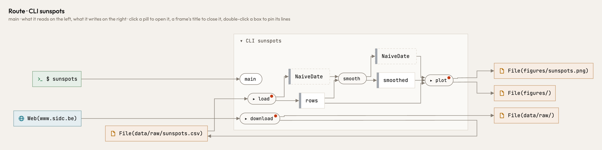

Atlas
What a program is, beneath the language it is written in.
The same program. The same figure.
Fetch a CSV from the web, keep it, clean it, smooth it, draw a figure. Written twice in Python. Atlas draws what each one does.


the same places on both sides · click a picture to open it in Atlas
The same program in another language.
Written quickly in Rust, the compiler forces every type. It does not decide where data lives.

Try it on your own code.
One binary. Your code stays on your machine.
curl -fsSL https://raw.githubusercontent.com/raoulg/atlas/main/install.sh | sh
atlas viewdraw the repository you are inatlas checkwhere the code and ten design principles disagreeatlas changeswhat your edit did to the routesatlas mcpthe same picture for your coding agent